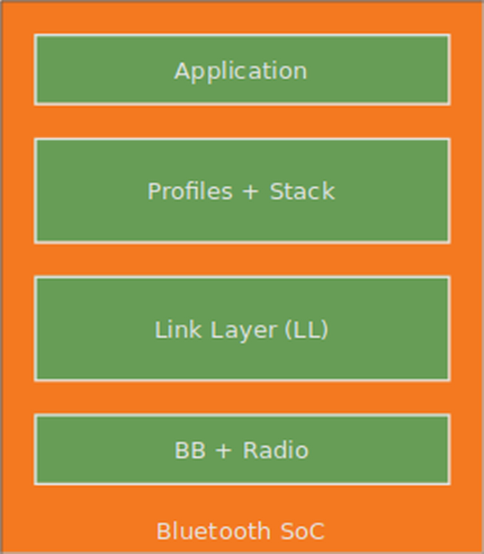
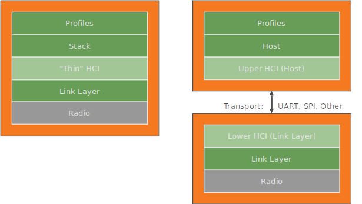
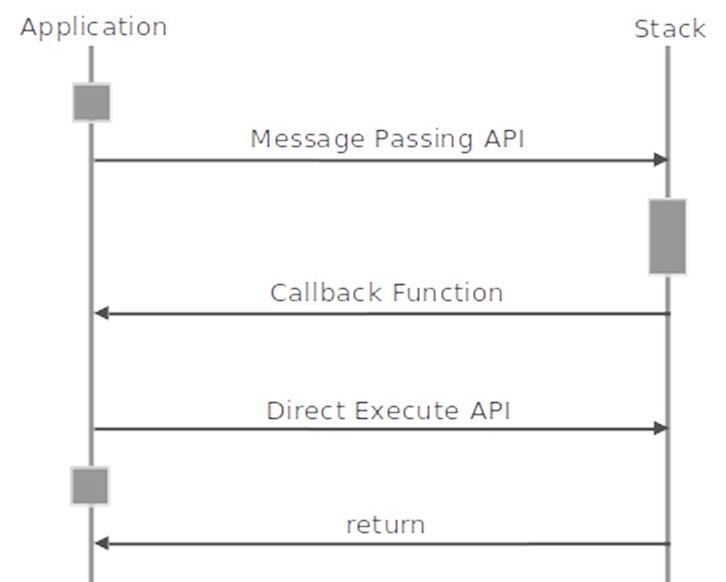
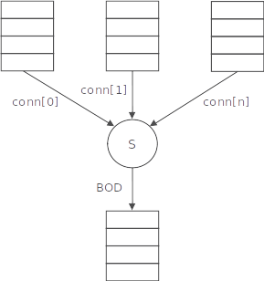

Controller Developer’s Guide
Introduction
This document is the Developer’s Guide for the em | bleu Controller software.
Audience
This book is written for experienced software engineers who might or might not have experience with em | bleu products. Such engineers typically have experience writing Bluetooth applications but might have limited experience with em | bleu software. The reader is assumed to have embedded C software experience.
Abbreviations
Definitions of abbreviations used in this document are listed below:
ACL: Asynchronous Connectionless data packet
AD: Advertising Data
AoA: Angle of Arrival
AoD: Angle of Departure
BIG: Broadcast Isochronous Group
BIS: Broadcast Isochronous Stream
BLE: Bluetooth Low Energy
BOD: Baseband Operational Descriptor
CHCI: Controller Host-Controller Interface
CIG: Connected Isochronous Group
CIS: Connected Isochronous Stream
CTE: Constant Tone Expression
HCI: Host Controller Interface
ISO: ISOchronous
LL: Link Layer
LLCP: Link Layer Control Protocol
LTK: Long Term Key
WSF: Wireless Software Foundation software service
References
The following documents are referenced by this document.
1: Bluetooth SIG, “Bluetooth Core Specification”, Version 5.4, January 31, 2023.
2: Packetcraft, Inc., “WSF Developer’s Guide”
System Context
The software system is dependent on WSF and PAL. WSF is an OS porting layer. It provides general-purpose software services such as queues, timers, and buffer management. PAL is the hardware platform abstraction layer. It provides the platform specific implementation to the hardware’s BSP libraries.
{kind=link}
Figure 2-1. BLE LL in a single-chip SoC system
System Configuration
The Host and Profiles are designed to support single-chip SoC systems and dual-chip systems.
When operating in a single-chip system the Host and Profiles run on the processor inside the SoC. A “thin” HCI layer adapts to the software interface of the target’s BLE Link Layer.
When operating in a dual-chip system the Host and Profiles run on a microcontroller and communicate with a BLE Controller chip over a wired interface such as UART or SPI. A standard transport-based HCI layer manages the communication between the two devices.
Figure 2-2. The Host and Profiles in a single-chip SoC system and dual-chip system
Architecture
This section describes the software architecture used by the em | bleu Controller.
Execution Context
The Controller operates in following execution contexts.
ISR
STACK
The ISR execution context is where the interrupt service routines execute. These interrupt service routines are called upon packet transmit and receive completions from the BB. These interrupt handlers have the highest priority and preempt other execution contexts.
The STACK execution context executes handler routines dispatched by the WSF task scheduler. For single chip configurations, the STACK task will also execute the upper layer protocols such as the em | bleu Host and em | bleu Profile task handlers.
In order to simplify single-chip requirements for upper layer software, the MAC layer handles all time critical operations (BLE TIFS) in the interrupt context. This will give processing priority to routines that need to meet time specific operations and give freedom to the upper layer software to execute with fewer timing restrictions.
Interface
Upper layer clients access MAC services through an API interface. The handling of the direct access, resource locking/synchronization or message passing nature of these routines is hidden from the client. Refer to the protocol specific API documentation for details.
The MAC uses the BB porting layer as an abstraction layer to the baseband hardware. This interface provides the hardware and protocol specific interfaces for operations scheduled by each MAC. Refer to the BB API documentation for more information.
For dual chip solutions, the MAC also provides a transport entity that operates above the API (for example HCI transport).
Message Passing API Functions
Message passing API functions result in a message being sent to the task running the stack. These functions typically involve an operation that requires synchronization with a higher priority task or a remote device operation.
Direct Execute API Functions
Direct execute API functions run entirely in the context of the calling function. These functions typically involve simple operations like reading or setting internal data. Resource locking, for example WsfCsEnter() and WsfCsExit(), may be used to provide atomic read or writes to internal data.
Callback Functions
Callback functions are implemented by the client of the LL API and execute in the call context of the STACK task. Callback functions are used to send events and data to the client.

Figure 2-1. Message passing and direct execute interfaces
Transmit Path
The transmit path prepares packets for delivery to the baseband. Packet preparation involves framing (for example LL PDU header) and scheduling of packet delivery on the medium. Transmit packets accumulate in an ARQ queue until it can be scheduled. When the receiving device acknowledges receipt of the packet, the packet is removed from the ARQ queue and the upper layer is notified that the transmit buffer is released (flow control).
In order to support back-to-back transmit packets the MAC must free transmit data buffers as fast as possible. The scheduler will provide transmit buffers to the BB just in time (JIT). This is done via callbacks between the BB and scheduler. JIT will give as much time as possible for transmit packet processing before having to flow control.
The MAC does not copy any data. Packet framing (prepending a MAC header) is achieved by pointer manipulation and therefore no buffer copy is required. The platform specific transport and BB implementations may perform data copies of buffers, as it is DMA’ed to and from hardware.
The transmit path does not allocate data buffers. Buffer allocation is performed above the API. For single chip implementations this is typically the protocol stack. For dual chip implementations this will be the transport layer.
Receive Path
The receive path processes packets received by the BB. Packet processing includes filtering packets, packet disassembly and packet routing.
Filtering packets (dropping) is conditional based on a mismatched CRC or a packet received from an unexpected device (for example BLE white list device address filtering). Packet disassembly involves removing and parsing MAC header. Once disassembled, the packet’s PDU is delivered to route to either the external protocol stack or internal LLCP.
In order to support back-to-back receive packets the upper layers must process and free received packets as fast as possible. The BB will allocate receive buffers in a just in time (JIT) manner as it sets up for a receive action. JIT will give as much time as possible for receive packet processing before having to flow control.
The receive path does not allocate data buffers. Buffers are allocated by the BB layer and passed to the LL receive path. Upon completion of MAC receive path processing, the buffer is stored in a receive queue. The buffer is “pulled” by the upper layer. Buffer deallocation is performed by the upper layer. For single chip implementations this will be the transport layer.
Scheduler
The MAC scheduler manages a sequence of timed operations which is consumed by the baseband. The types of timed operations are defined by the BB porting layer, such as BLE advertising/scanning and connection operations. The scheduler will prioritize operations based on protocol requirements. Additional protocol specific parameters are also specified based on protocol requirements, such as:
RF channel
transmit power level
receive access address filtering
CRC initial value
The scheduler maintains a list of BOD in non-overlapping time order. The scheduler provides the next BOD to the BB in a sequential manner. After the BB completes a BOD, the scheduler is notified and the next BOD is provided to the BB.
Figure 2-1. MAC scheduler
Medium Access Scheduler
em | bleu controller protocol stacks use a service called the Medium Access Scheduler (MAS) to share access to a common radio. Protocols can reserve timed operations, e.g. set of one or more packet transactions, with an element called Baseband Operational Descriptor (BOD). A BOD contains timing and scheduling information such that MAS can schedule operations based on certain performance criteria such as throughput or radio idle power savings.
Overview
MAS maintains a list of BODs in non-overlapping time order. This list is implemented using a doubly linked list. The list is sorted in BOD time order. A BOD specifies a due time and a duration. This is illustrated in the top portion of Figure 1. A BOD may be reinserted after it completes to perform periodic operations. In Figure 1, op[0] repeats as op[0]’ and op[1] repeats as op[1]’.
A Protocol Timer (PT) is used as a reference clock for BOD start times. The PT is implemented with a 32-bit free-running clock, which monotonically counts continuously even when the system is sleeping. MAS will schedule an interrupt to execute the BOD at the head of the list at the BOD’s due time minus schSetupDelay. The schSetupDelay time period is a fixed time to accommodate radio wakeup as well as any logic processing to begin the BOD.
At the completion of each BOD, MAS will remove the BOD from the BOD list and notify the client the operation is complete. MAS will continue to operate on the new head BOD.
Each role-specific BLE transport uses an inherited BOD to schedule operations with MAS. For BLE, the following transports use BOD to schedule radio operations.
DTM, Tx Test
DTM, Rx Test
Legacy Advertiser
Legacy Scanner
ACL, Peripheral Role
ACL, Central Role
Extended Advertiser
Extended Scanner
Periodic Advertiser
Periodic Scanner
BIS, Broadcaster Role
BIS, Synchronizer Role
CIS, Peripheral Role
CIS, Central Role
Reservation Manager
TDMA (Time Division Multiple Access) technologies such as BLE may have multiple transports which will contend for the radio. The Reservation Manager (RM) is a module of MAS which manages the quality of service between a collection of BODs.
Limiting a maximum capacity threshold
Flexible host specified intervals: specific, range, preferred, non-preferred
Minimize diminished performance due to additional connections
Minimize CE (Connection Event) collisions between connected slaves
Minimize throughput loss (CE termination due to encroaching BODs)
RM is used by periodic transports that control the timing of peer device(s). In BLE these are the following transport specific to certain roles:
Periodic Advertiser
ACL, Central Role
CIS, Central Role
Initial Anchor Point Selection
RM attempts to avoid collisions by setting an initial anchor in the least likely place of collision. This place it the middle of the largest gap between any BODs.
This method of avoiding collision works if the intervals between BODs are a common multiple of each other. The example in Figure 2 is the ideal case when all intervals are precisely the same size. RM also works if intervals are a common multiple of each other, take for example see the scenario below. Since all handles have a common multiple of 10ms, RM is able to issue offsets with no overlap.
handle=0, interval=10ms
handle=1, interval=20ms
handle=2, interval=30ms
Due to computation size limitations, the limit on the depth of the multiple is 4. Interval depth is the 2^N distance between the smallest interval and the largest. For example, the depth between 16 (2^4) and 64 (2^6) is 2.
In the example below, handle=2 will not be provided an adequate offset since the interval is not a common multiple.
handle=0, interval=10ms
handle=1, interval=10ms
handle=2, interval=60ms
There are scenarios where RM cannot find a common multiple and therefore is not able to adjust for non-overlapping BODs. For example with the example listed below, overlap will eventually occur.
handle=0, interval=17ms
handle=1, interval=33ms
handle=2, interval=45ms
When configuring a system with multiple transports that own the radio timing, use intervals with common multiples. The ratio between the largest and smallest intervals should be within a depth of 4.
Limiting High-Density Reservations
RM will limit the maximum number of reservations using the following rule:
ReservationLimit = 2 × N, where N = ConnectionInterval ÷ SCH_RM_PREF_PER
Any reservations beyond this limit will be rejected. The typical value for SCH_RM_PREF_PER is 10 ms.
For example, RM will allow the following scenarios:
Central can schedule at most, 2 connections with a ConnectionInterval = 7.5-ms (minimum BLE Connection Interval)
Central can schedule at most, 4 connections with a ConnectionInterval = 20-ms
Conflict Resolution
BOD collisions is when a BOD is inserted into the list but an existing BOD overlaps in time. Figure 3 shows an example of op[3] attempting insertion, however, overlaps in time with the existing op[2].
MAS uses a two-level method to resolve conflicts:
Rescheduling Priority: BOD with the highest rescheduling priority wins
Transport-Aware Priority: BOD with the same rescheduling priority may use a transport-aware conflict resolution handler
Rescheduling Priority
The inserting BOD is compared to all BODs that are in conflict. More than one existing BOD may be in conflict, especially when the inserting BOD has long durations. If the inserting BOD has a higher priority (smaller number) than any of the existing BODs, the inserting BOD wins the conflict and the existing BODs are rescheduled.
Each BOD sets a rescheduling priority property to one of the following values, listed in priority order:
Fixed Preferred: rescheduling has limited recoverable consequences
Fixed: rescheduling has recoverable consequences
Moveable Preferred: rescheduling has minor consequences
Moveable: rescheduling has no consequences
For BLE, the following rescheduling priorities are assigned to each of the role-specific transports.
BLE Transport |
Rescheduling Priority |
Broadcaster Advertising Event |
Moveable |
Broadcaster Auxiliary Event |
Moveable Preferred |
Broadcaster Synchronous Event |
Moveable Preferred |
Broadcaster Isochronous Event |
Fixed Preferred |
Observer Advertising Event |
Moveable |
Observer Auxiliary Event |
Moveable Preferred |
Observer Synchronous Event |
Moveable Preferred |
Observer Isochronous Event |
Fixed Preferred |
Initiator Advertising Event |
Moveable Preferred |
Initiator Auxiliary Event |
Moveable Preferred |
Central Connection Event |
Fixed |
Peripheral Connection Event |
Fixed |
Transport-Aware Priority
If the inserting BOD has the same priority as all the existing BODs in conflict then conflict resolution is handled based on transport-specific requirements.
For ACL, these requirements are based on the risk of connection loss, throughput performance, and power savings. The following algorithm is used:
BLE connection event is preferred
Else an established connection (i.e. not initiating) is preferred
Else a connection with an imminent supervision timeout expiration is preferred
Else a connection with an active LLCP is preferred
Else a connection with a Tx Data PDU pending is preferred
Else a connection with less frequent connection interval is preferred
Else the existing connection (i.e. not newly inserted) is preferred
Adjacent Scheduling
Some transports are dependent and related to parent transports. These parent and child BODs relationships are best scheduled adjacent to each other.
Periodic Advertising and BIG
In BLE, a Periodic Advertiser is used to announce the properties and timing of a BIG such that a synchronizing device can locate the BIG. There is one and only one relationship between a Periodic Advertiser and its BIG, and vice-versa.
Radio sleep/idle efficiency is improved by adjacent operation scheduling since active radio transactions are grouped together and the system may sleep for a longer period of time.
An additional benefit of treating the Periodic Advertising and BIG as a single long transaction improves radio bandwidth (density) due to minimal fragmentation of operations. This allows the greater possibility of scheduling additional operations.
When configuring a BIG, the Periodic Advertising interval must be a multiple of the BIG IsoInterval, i.e. PA_Interval = N x IsoInterval, where N = 1, 2, 3, etc. Failure to adhere to this pattern will result in packet loss.
Consider these examples:
BIG IsoInterval = 7.5-ms, then PA_Interval = 7.5-ms, 15-ms, 22.5-ms, etc.
BIG IsoInterval = 10-ms, then PA_Interval = 10-ms, 20-ms, 30-ms, etc.
ACL and CIS
In BLE, an ACL transport is associated to one CIS. The Central coordinates the offset between the ACL and CIS. The Central will reserve each ACL and CIS independetly with the RM. As a result, the ACL interval should be a multiple of the CIS interval.
For example, if a CIG contains 2 CIS, using the following ACL intervals will place the ACL events in an alternating manner.
CIG IsoInterval = 7.5-ms, then ACL Interval = 15-ms, 30-ms, 60-ms, etc.
CIG IsoInterval = 10-ms, then ACL Interval = 20-ms, 40-ms, 80-ms, etc.
Folder Organization
The contents of the root directory are listed in the table below:
Directory |
Description |
|---|---|
controller |
Controller software |
platform |
Platform specific software |
projects |
Controller project files |
wsf |
Wireless Software Foundation |
controller folder
The contents of the controller directory are listed in the table below:
Directory |
Description |
|---|---|
build |
Build configuration / Makefiles |
include |
Controller API |
sources |
Controller source |
Porting
The porting process typically consists of two main steps:
Porting PAL to the target system.
Porting WSF interfaces and services to the target OS and software system.
PAL Porting
Consult the em | bleu PAL Developer’s Guide for PAL porting.
WSF Porting
Consult the WSF Developer’s Guide for WSF porting.
HCI Porting
em | bleu’s HCI layer is designed to be portable and support different transport and chip configurations. The porting process depends on the chip configuration:
If the stack is ported to a single-chip system then a “thin HCI” porting process is used.
If the stack is ported to a two-chip system with wired HCI transport then a transport-based porting process is used.
Initialization
This section describes the initialization procedures for this component.
LL Initialization
Initialization helper routines are available in controller/sources/ble/init/*.c. A single function call initializes the LL, LlInit(). This routines uses the following conditional compilation flags to determine the types of supported roles to compile:
INIT_BROADCASTER: initialize broadcaster role and PAwR advertiserINIT_OBSERVER: initialize observer role and PAwR synchronizerINIT_PERIPHERAL: initialize peripheral role and PAwR advertiserINIT_CENTRAL: initialize central role and PAwR synchronizerINIT_ENCRYPTED: initialize encryption feature across all logical transports
The purpose of LL Initialization defines in the Packetcraft stack is to exclude initialization code which allows the linker to exclude some functions and static variables saving RAM and ROM.
Periodic Advertising and PAwR use much of the same features as Extended Advertising, so those features are associated with INIT_PERIPHERAL. The PAwR responder features need the scan code that is included with INIT_CENTRAL.
One of the features of PAwR is to provide a mechanism for creating a standard ACL connection to one of the synchronized responders without another advertising set (see [Vol 6], Part B, Section 4.4.2.12.2). If that feature is used, the periodic advertiser becomes the central and the synchronizer becomes the peripheral in the ACL connection. This is a feature used by Electronic Shelf Label (ESL). If the Periodic Advertising Connection procedure as described in GAP (see [Vol 3], Part C, Section 9.5.5 ) is used, then all of the roles must be enabled.
Feature level enables allow code and RAM savings if the feature is not needed.
INIT_FEAT_CTE: enable CTE featureINIT_FEAT_PAST: enable PAST featureINIT_FEAT_PC: enable Power Control featureINIT_FEAT_BIS: enable BIS featureINIT_FEAT_CIS: enable CIS featureINIT_FEAT_ECU: enable ECU featureINIT_FEAT_ISO: enable ISO featureINIT_FEAT_PAWR: enable PAWR feature
In addition, Bluetooth version specific features are compiled by setting the following flag:
BT_VER: seeLL_VER_BT_CORE_SPEC_X_Yinll_defs.h
Configuration
Compile Time
The Controller uses immutable compile time configurations determined by the system requirements. These values are defined in the following files:
controller/include/common/cfg_mac.hcontroller/include/common/cfg_mac_ble.h
See source files for definitions.
Runtime
Runtime configuration allows a ROM’ed binary the flexibility to configure the system at initialization time. A constrained memory device can use boot strap settings to alter runtime configurations for specific applications.
Note: Runtime configuration values cannot be altered after initialization.
Runtime configurations are defined in LlInitRtCfg_t. The definition can be found in ll_api.h.
Implementation Considerations
This section discusses various implementation considerations available in this component.
Vendor Specific HCI Commands
Custom vendor specific commands can be added to supply platform specific functionality and diagnostics. These commands are enabled with the following LL conditional compilations values modified in cfg_mac.h or as an override value with a compiler flag.
LHCI_ENABLE_VS: Enable vendor specific command processing.LHCI_ENABLE_VS_TEST: Enable vendor specific test commands.
The stack offers several custom vendor specific commands. These commands are implemented in the lhci_cmd_vs.c. Additional commands can be added to support platform specific features.
Step 1. Add a custom vendor specific command decoder after the LL is initialized using LhciVsExtInit(lhciVsExtDecodeCmdPkt);. Where lhciVsExtDecodeCmdPkt is defined as follows.
/*************************************************************************************************/
/*!
* \brief Decode extended vendor specific HCI command packet.
*
* \param pHdr Unpacked command header.
* \param pBuf Packed HCI packet buffer.
*
* Command processing for vendor specific commands.
*
* \return true if opcode handled, false otherwise.
*/
/*************************************************************************************************/
bool lhciVsExtDecodeCmdPkt(LhciHdr_t *pHdr, uint8_t *pBuf)
{
return false;
}
Step 2. Define a custom opcode for the command. In the example stub file the following opcodes are defined.
#define LHCI_OPCODE_VS_CMD1 HCI_OPCODE(HCI_OGF_VENDOR_SPEC, 0x000)
#define LHCI_OPCODE_VS_CMD2 HCI_OPCODE(HCI_OGF_VENDOR_SPEC, 0x001)
Step 3. Add command parameter parser in the upper switch statement of lhciVsExtDecodeCmdPkt(). For example:
case LHCI_OPCODE_VS_CMD1:
{
uint32_t param32;
BSTREAM_TO_UINT32(param32, pBuf);
/* TODO: perform CMD1 operation */
break;
}
case LHCI_OPCODE_VS_CMD2:
/* TODO: perform CMD2 operation */
uint8_t evtParamLen = 1;
break;
Step 4. Add command response builder in the lower switch statement of lhciVsExtDecodeCmdPkt(). For example:
case LHCI_OPCODE_VS_CMD1:
/* TODO: fill CMD1 response data, if needed */
break;
case LHCI_OPCODE_VS_CMD2:
{
/* TODO: fill CMD2 response data, if needed */
uint8_t param8 = 8;
UINT8_TO_BSTREAM(pBuf, param8);
break;
}
Certain LL features can be disabled to aid in tuning and debugging BB operation.
Note: Disabling these features results in a non-compliant LL.
The following LL conditional compilations values can be modified in cfg_mac.h or as an override value with a compiler flag.
LL_ENABLE_WW: Window widening enable.LL_ENABLE_ADV_DLY: Enable advertising delay.LL_ENABLE_SLV_LATENCY: Enable slave latency.LL_ENABLE_LLCP_TIMER: Enable LLCP timer.LL_ENABLE_LLCP_STARTUP: Enable LL generated LLCP messages at start of connection.
Hardware Error Codes
The Controller may report unexpected errors by using the LL_ERROR_IND event when using “thin HCI’ or the HCI_HW_ERROR_EVT HCI event when using a HCI transport.
Errors reported by the LL will use the standard HCI error codes for the Hardware_Code. If an error is detected, the LL will attempt to recover gracefully, but likely the Host and LL are out of sync. The typical error code reported by the LL are the following:
LL_ERROR_CODE_MEM_CAP_EXCEEDED: A transmit buffer was requested beyond the negotiated capability by the LL.
If a serialized HCI transport is used (e.g. UART, SPI), the receive packet state machine may report errors. The state machine will attempt to restart byte processing to the start of frame. The following error codes may be reported:
CHCI_TR_CODE_INVALID_DATA (0xA0): Invalid data was received.CHCI_TR_CODE_INVALID_DATA_LEN (0xA1): Invalid data length was received.CHCI_TR_CODE_OUT_OF_MEMORY (0xA2): Out of memory.
Enabling CTE Feature
The following LL conditional compilations values are set to enable CTE.
CTE_PRESENT=1: Set to1to indicate CTE HW is availableINIT_FEAT_CTE: defined symbol to initialize CTE featureBT_VER>=10: Set to 10 or greater to initialize CTE feature
Manual Transmit Power Adjustment
Transmit power is adjustable for all logical transports. This section below describes the APIs used to adjust the transmit power for each logical transport.
For legacy Advertising, Extended Advertising and Periodic Advertising:
HCI_LE_Set_Extended_Advertising_Parameters::Advertising_TX_Power== 0x7F (No Preference)Primary Channel uses default value set with VS command:
LHCI_OPCODE_VS_SET_ADV_TX_PWRSecondary Channel uses default value set with VS command:
LHCI_OPCODE_VS_SET_ADV_TX_PWRNote: Actual value used is dependent on platform capabilities.
HCI_LE_Set_Extended_Advertising_Parameters::Advertising_TX_Power!= 0x7FPrimary Channel uses:
LHCI_LE_Set_Extended_Advertising_Parameters::Advertising_TX_PowerSecondary Channel uses:
LHCI_LE_Set_Extended_Advertising_Parameters::Advertising_TX_PowerNote: Actual value used is dependent on platform capabilities.
For ACL (assumes LE Power Control feature is disabled or unmanaged):
Uses default value in our runtime configuration setting, typically +0dBm. This is adjustable in
pal_cfg.h.Modification while connected is possible with VS command:
LHCI_OPCODE_VS_SET_CONN_TX_PWR
For BIG/BIS:
BIS Data PDUs uses default value set with VS command:
LHCI_OPCODE_VS_SET_ADV_TX_PWRBIS Control PDUs uses default value set with VS command:
LHCI_OPCODE_VS_SET_ADV_TX_PWR
For CIG/CIS:
Uses the same value as its parent ACL. In other words, setting the ACL Tx Power will propagate to the CIS.